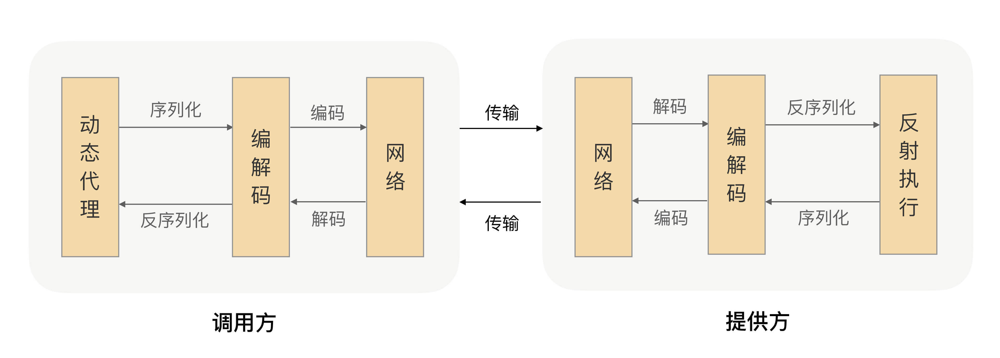
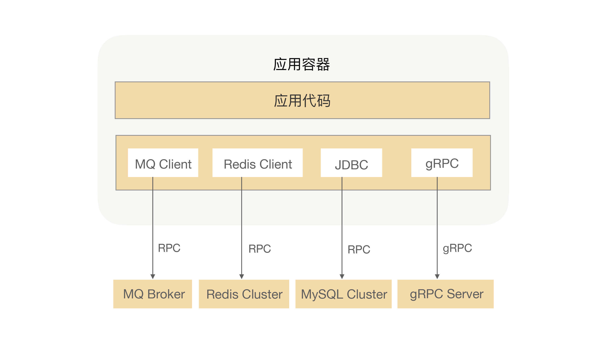

- 00 开篇词 别老想着怎么用好RPC框架，你得多花时间琢磨原理.md.html
- 01 核心原理：能否画张图解释下RPC的通信流程？.md.html
- 02 协议：怎么设计可扩展且向后兼容的协议？.md.html
- 03 序列化：对象怎么在网络中传输？.md.html
- 04 网络通信：RPC框架在网络通信上更倾向于哪种网络IO模型？.md.html
- 05 动态代理：面向接口编程，屏蔽RPC处理流程.md.html
- 06 RPC实战：剖析gRPC源码，动手实现一个完整的RPC.md.html
- 07 架构设计：设计一个灵活的RPC框架.md.html
- 08 服务发现：到底是要CP还是AP？.md.html
- 09 健康检测：这个节点都挂了，为啥还要疯狂发请求？.md.html
- 10 路由策略：怎么让请求按照设定的规则发到不同的节点上？.md.html
- 11 负载均衡：节点负载差距这么大，为什么收到的流量还一样？.md.html
- 12 异常重试：在约定时间内安全可靠地重试.md.html
- 13 优雅关闭：如何避免服务停机带来的业务损失？.md.html
- 14 优雅启动：如何避免流量打到没有启动完成的节点？.md.html
- 15 熔断限流：业务如何实现自我保护_.md.html
- 16 业务分组：如何隔离流量？.md.html
- 17 异步RPC：压榨单机吞吐量.md.html
- 18 安全体系：如何建立可靠的安全体系？.md.html
- 19 分布式环境下如何快速定位问题？.md.html
- 20 详解时钟轮在RPC中的应用.md.html
- 21 流量回放：保障业务技术升级的神器.md.html
- 22 动态分组：超高效实现秒级扩缩容.md.html
- 23 如何在没有接口的情况下进行RPC调用？.md.html
- 24 如何在线上环境里兼容多种RPC协议？.md.html
- 加餐 RPC框架代码实例详解.md.html
- 加餐 谈谈我所经历过的RPC.md.html
- 答疑课堂 基础篇与进阶篇思考题答案合集.md.html
- 结束语 学会从优秀项目的源代码中挖掘知识.md.html
- 捐赠
01 核心原理：能否画张图解释下RPC的通信流程？
你好，我是何小锋。只要你做过几年开发，那我相信RPC这个词你肯定是不陌生了。写专栏之前，我还特意查了下RPC的百度指数，发现这些年RPC的搜索趋势都是稳步上升的，这也侧面说明了这项技术正在逐步渗透到我们的日常开发中。作为专栏的第一讲，我想只围绕“RPC”这个词，和你聊聊它的定义，它要解决的问题，以及工作原理。
在前些年，我面试工程师的时候，最喜欢问候选人一个问题，“你能否给我解释下RPC的通信流程”。这问题其实并不难，不过因为很多工程师平时都在用各种框架，他们可能并未停下来思考过框架的原理，所以，问完这问题，有的人就犹豫了，吱唔了半天也没说出所以然来。
紧接着，我会引导他说，“你想想，如果没有RPC框架，那你要怎么调用另外一台服务器上的接口呢”。你看，这问题可深可浅，也特别考验候选人的基本功。如果你是候选人，你会怎么回答呢？今天我就来试着回答你这个问题。
什么是RPC？
我知道你肯定不喜欢听概念，我也是这样，看书的时候一看到概念就直接略过。不过，到后来，我才发现，“定义”是一件多么伟大的事情。当我们能够用一句话把一个东西给定义出来的时候，侧面也说明你已经彻底理解这事了，不仅知道它要解决什么问题，还要知道它的边界。所以，你可以先停下来想想，什么是RPC。
RPC的全称是Remote Procedure Call，即远程过程调用。简单解读字面上的意思，远程肯定是指要跨机器而非本机，所以需要用到网络编程才能实现，但是不是只要通过网络通信访问到另一台机器的应用程序，就可以称之为RPC调用了？显然并不够。
我理解的RPC是帮助我们屏蔽网络编程细节，实现调用远程方法就跟调用本地（同一个项目中的方法）一样的体验，我们不需要因为这个方法是远程调用就需要编写很多与业务无关的代码。
这就好比建在小河上的桥一样连接着河的两岸，如果没有小桥，我们需要通过划船、绕道等其他方式才能到达对面，但是有了小桥之后，我们就能像在路面上一样行走到达对面，并且跟在路面上行走的体验没有区别。所以我认为，RPC的作用就是体现在这样两个方面：
- 屏蔽远程调用跟本地调用的区别，让我们感觉就是调用项目内的方法；
- 隐藏底层网络通信的复杂性，让我们更专注于业务逻辑。
RPC通信流程
理解了什么是RPC，接下来我们讲下RPC框架的通信流程，方便我们进一步理解RPC。
如前面所讲，RPC能帮助我们的应用透明地完成远程调用，发起调用请求的那一方叫做调用方，被调用的一方叫做服务提供方。为了实现这个目标，我们就需要在RPC框架里面对整个通信细节进行封装，那一个完整的RPC会涉及到哪些步骤呢？
我们已经知道RPC是一个远程调用，那肯定就需要通过网络来传输数据，并且RPC常用于业务系统之间的数据交互，需要保证其可靠性，所以RPC一般默认采用TCP来传输。我们常用的HTTP协议也是建立在TCP之上的。
网络传输的数据必须是二进制数据，但调用方请求的出入参数都是对象。对象是肯定没法直接在网络中传输的，需要提前把它转成可传输的二进制，并且要求转换算法是可逆的，这个过程我们一般叫做“序列化”。
调用方持续地把请求参数序列化成二进制后，经过TCP传输给了服务提供方。服务提供方从TCP通道里面收到二进制数据，那如何知道一个请求的数据到哪里结束，是一个什么类型的请求呢？
在这里我们可以想想高速公路，它上面有很多出口，为了让司机清楚地知道从哪里出去，管理部门会在路上建立很多指示牌，并在指示牌上标明下一个出口是哪里、还有多远。那回到数据包识别这个场景，我们是不是也可以建立一些“指示牌”，并在上面标明数据包的类型和长度，这样就可以正确的解析数据了。确实可以，并且我们把数据格式的约定内容叫做“协议”。大多数的协议会分成两部分，分别是数据头和消息体。数据头一般用于身份识别，包括协议标识、数据大小、请求类型、序列化类型等信息；消息体主要是请求的业务参数信息和扩展属性等。
根据协议格式，服务提供方就可以正确地从二进制数据中分割出不同的请求来，同时根据请求类型和序列化类型，把二进制的消息体逆向还原成请求对象。这个过程叫作“反序列化”。
服务提供方再根据反序列化出来的请求对象找到对应的实现类，完成真正的方法调用，然后把执行结果序列化后，回写到对应的TCP通道里面。调用方获取到应答的数据包后，再反序列化成应答对象，这样调用方就完成了一次RPC调用。
那上述几个流程就组成了一个完整的RPC吗？
在我看来，还缺点东西。因为对于研发人员来说，这样做要掌握太多的RPC底层细节，需要手动写代码去构造请求、调用序列化，并进行网络调用，整个API非常不友好。
那我们有什么办法来简化API，屏蔽掉RPC细节，让使用方只需要关注业务接口，像调用本地一样来调用远程呢？
如果你了解Spring，一定对其AOP技术很佩服，其核心是采用动态代理的技术，通过字节码增强对方法进行拦截增强，以便于增加需要的额外处理逻辑。其实这个技术也可以应用到RPC场景来解决我们刚才面临的问题。
由服务提供者给出业务接口声明，在调用方的程序里面，RPC框架根据调用的服务接口提前生成动态代理实现类，并通过依赖注入等技术注入到声明了该接口的相关业务逻辑里面。该代理实现类会拦截所有的方法调用，在提供的方法处理逻辑里面完成一整套的远程调用，并把远程调用结果返回给调用方，这样调用方在调用远程方法的时候就获得了像调用本地接口一样的体验。
到这里，一个简单版本的RPC框架就实现了。我把整个流程都画出来了，供你参考：

RPC在架构中的位置
围绕RPC我们讲了这么多，那RPC在架构中究竟处于什么位置呢？
如刚才所讲，RPC是解决应用间通信的一种方式，而无论是在一个大型的分布式应用系统还是中小型系统中，应用架构最终都会从“单体”演进成“微服务化”，整个应用系统会被拆分为多个不同功能的应用，并将它们部署在不同的服务器中，而应用之间会通过RPC进行通信，可以说RPC对应的是整个分布式应用系统，就像是“经络”一样的存在。
那么如果没有RPC，我们现实中的开发过程是怎样的一个体验呢？
所有的功能代码都会被我们堆砌在一个大项目中，开发过程中你可能要改一行代码，但改完后编译会花掉你2分钟，编译完想运行起来验证下结果可能要5分钟，是不是很酸爽？更难受的是在人数比较多的团队里面，多人协同开发的时候，如果团队其他人把接口定义改了，你连编译通过的机会都没有，系统直接报错，从而导致整个团队的开发效率都会非常低下。而且当我们准备要上线发版本的时候，QA也很难评估这次的测试范围，为了保险起见我们只能把所有的功能进行回归测试，这样会导致我们上线新功能的整体周期都特别长。
无论你是研发还是架构师，我相信这种系统架构我们肯定都不能接受，那怎么才能解决这个问题呢？
我们首先都会想到可以采用“分而治之”的思想来进行拆分，但是拆分完的系统怎么保持跟未拆分前的调用方式一样呢？我们总不能因为架构升级，就把所有的代码都推倒重写一遍吧。
RPC框架能够帮助我们解决系统拆分后的通信问题，并且能让我们像调用本地一样去调用远程方法。利用RPC我们不仅可以很方便地将应用架构从“单体”演进成“微服务化”，而且还能解决实际开发过程中的效率低下、系统耦合等问题，这样可以使得我们的系统架构整体清晰、健壮，应用可运维度增强。
当然RPC不仅可以用来解决通信问题，它还被用在了很多其他场景，比如：发MQ、分布式缓存、数据库等。下图是我之前开发的一个应用架构图：

在这个应用中，我使用了MQ来处理异步流程、Redis缓存热点数据、MySQL持久化数据，还有就是在系统中调用另外一个业务系统的接口，对我的应用来说这些都是属于RPC调用，而MQ、MySQL持久化的数据也会存在于一个分布式文件系统中，他们之间的调用也是需要用RPC来完成数据交互的。
由此可见，RPC确实是我们日常开发中经常接触的东西，只是被包装成了各种框架，导致我们很少意识到这就是RPC，让RPC变成了我们最“熟悉的陌生人”。现在，回过头想想，我说RPC是整个应用系统的“经络”，这不为过吧？我们真的很有必要学好RPC，不仅因为RPC是构建复杂系统的基石，还是提升自身认知的利器。
总结
本讲我主要讲了下RPC的原理，RPC就是提供一种透明调用机制，让使用者不必显式地区分本地调用和远程调用。RPC虽然可以帮助开发者屏蔽远程调用跟本地调用的区别，但毕竟涉及到远程网络通信，所以这里还是有很多使用上的区别，比如：
- 调用过程中超时了怎么处理业务？
- 什么场景下最适合使用RPC？
- 什么时候才需要考虑开启压缩？
无论你是一个初级开发者还是高级开发者，RPC都应该是你日常开发过程中绕不开的一个话题，所以作为软件开发者的我们，真的很有必要详细地了解RPC实现细节。只有这样，才能帮助我们更好地在日常工作中使用RPC。
课后思考
- 你应用中有哪些地方用到了RPC？
- 你认为，RPC使用过程中需要注意哪些问题？
欢迎留言和我分享你的思考和疑惑，也欢迎你把文章分享给你的朋友，邀请他加入学习。我们下节课再见！
© 2019 - 2023 Liangliang Lee. Powered by gin and hexo-theme-book.